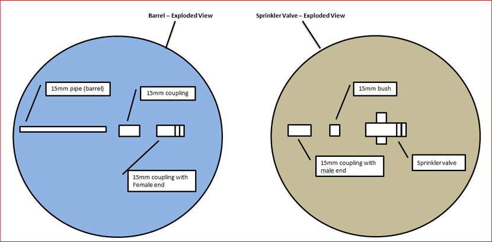
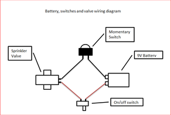

UPDATE - Check out step 12 for my latest updated version of my compressed Air Gun Launcher
Once or twice in your life you might be lucky to come-up with an original idea. I really thought that this was one of mine. The use of a sprinkler valve as an air release is a really cleaver idea and this I borrowed. It was the hand pump in the end of the gun itself which I thought made it one of a kind. Unfortunately a quick search in Instructables revealed that another clever soul had already come up with it!
The only thing that I can claim is using a hand pump and a sprinkler valve together to make an awesome, hand-held, self-contained, compressed air gun which is easy to make and loads of fun.
So what can you shoot with it?
Rockets
paper rockets - check out the YouTube clip below to see how to make these. They may be made of paper and tape but they can really fly. Check step 10 to see how they are made
Plastic Darts
These things fly. The "bullet" consists of a plastic tube and a rubber cork. Check out step 11 to see how they are made
Paint Balls
This is why I originally designed this gun. Unfortunately these arn't easy to come by in Australia. Once I do get my hads on some I'll post a video.
CAUTION: Please be careful when using this gun. It really is quite powerful and could do some nasty damaged. Make sure that you teach any kids using this gun how to handle it correctly.
UPDATE - Check out


Other Bits
Tools

The drawing below shows an exploded view of the air gun. It makes it a lot easier to understand how all of the bits go together.
The best advice that I can give to you is to make sure you have all the correct parts before you start. You might have to change some of the dimensions to suit your hardware. You might have to use a different sprinkler valve or pump depending on what you can get your hands on.


The first thing that I started on was the part of the air chamber that fits into the sprinkler valve.


For those who don't know what a sprinkler valve is - here's the low down. The valve is used in sprinkler systems that use a timer that switches on the system periodically. The valve itself has a relay which opens as soon as a current is activated. The valve opens virtually instantaneously so the air compressed inside the chamber is released in one huge rush.


Next is to add the rest of the air chamber and air pump. Make sure you don't get a too cheap a pump, the first one I used was from a $2 shop and leaked.



Now your ready to screw the barrel into the sprinkler valve.




THAT'S IT! Now it's time to make the projectiles :)


What next?
So hopefully you have now been inspired and want to build your own. I have tried to give you as much detail as possible but this is really just a guide. You might not be able to find the exact same parts but this ible' should help you on your way to making one wicked air compressed gun.
What I would have done differently?
So that’s it. Enjoy and remember to be safe - this is a weapon after all.


These rockets sound like they blow apart as soon as some compressed air is passed through them. This couldn't be farther from the truth. If you make the rocket right they become very stable, light and strong. I did make a video on how to make one but izzy darlow design on Instructables is far superior The only change that I made was to make bigger fins (check out the PDF file for images of the larger fins. Also check out the youtube clip below. It's a pretty damn good explanation on how to make them too.
Things to gather:
Notes:
To see the rocket in action check out the YouTube clup at the start of the instructable.


Ok so I did get a bit bored with paper rockets - as fun as they are. I decided to take it to the next step and make a bullet out of some plastic pipe and a rubber cork. The pipe itself is from a halloween pitch fork handle, the plastic pipe fitted perfectly down the barrel. The rubber cork can be easily brought from anyone store that sells rubber and foam products.
so here's what I did.
Check out the YouTube clip at the start of the Instructable to see it in action.
So my original gun finally gave up the ghost after the pump fell apart. I thought that this would be a good time to do some updates so here's what I did:
Batteries - Instead of having a cable-tied box on the gun itself, I now have them in the handle. It was a little tricky but you can see from the PDF image below how I managed to do it. It also has 2 9v batteries instead of just one. I was finding that if I put too much pressure in the air chamber the sprinkler wouldn't activate.
Pump - I used a much better quality pump this time and have also made it removable so when it finally fails I can just replace it.
Sprinkler Valve - I un-did the valve and turned it around so the wires were facing down the gun and not going sideways (see image)
Images to come soon.